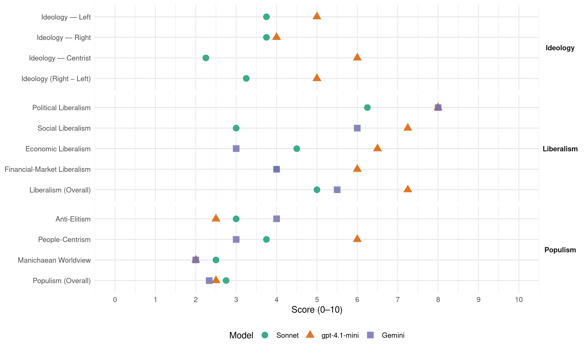

CU (Netherlands, 2002)
manifesto_id 22526_200205
Get full text: This site shows derived annotations and short verbatim quotes only. The full manifesto text is © Manifesto Project / WZB — obtain it via manifesto-project.wzb.eu using the manifesto_id above.
Headline scores
| Dimension | Sonnet | gpt-4.1-mini | Gemini |
|---|---|---|---|
| Populism (Overall) | 2.8 | 2.5 | 2.3 |
| Anti-Elitism | 3.0 | 2.5 | 4.0 |
| People-Centrism | 3.8 | 6.0 | 3.0 |
| Manichaean Worldview | 2.5 | 2.0 | 2.0 |
| Ideology (Right − Left) | 3.2 | 5.0 | – |
| Liberalism (Overall) | 5.0 | 7.2 | 5.5 |
| Political Liberalism | 6.2 | 8.0 | 8.0 |
| Social Liberalism | 3.0 | 7.2 | 6.0 |
| Economic Liberalism | 4.5 | 6.5 | 3.0 |
| Financial-Market Liberalism | 4.0 | 6.0 | 4.0 |
Evidence per dimension
Economic Liberalism
Gemini · score 4.0 · verified · chunk 1
“kapitalisme en economisch liberalisme in het verleden”
Deze traditie kwam op toen het kapitalisme en economisch liberalisme in het verleden ruim baan kregen.
Gemini · score 5.0 · mixed · chunk 2
“vrije mededinging, worden ingeperkt”
onafhankelijke pers en van vrije mededinging, worden ingeperkt. Het marktaandeel van één uitgever
Gemini · score 2.0 · verified · chunk 3
“voortgaande liberalisering, waardoor de prijzen”
Het beleid van voortgaande liberalisering, waardoor de prijzen steeds verder onder druk komen
Gemini · score 5.0 · mixed · chunk 4
“terughoudendheid tegenover verdere liberalisering van nutssectoren”
burger sterk zullen dalen, wordt vooralsnog niet waargemaakt. Het is van groot belang dat nutsfuncties voor iedere burger tegen betaalbare prijzen toegankelijk zijn. Daarom is terughoudendheid tegenover verdere liberalisering van nutssectoren op zijn plaats.
gpt-4.1-mini · score 6.0 · verified · chunk 1
“Het bedrijfsleven moet ook sociale doelen nastreven, zoals werkgelegenheid en sociale zekerheid”
- Het bedrijfsleven moet ook sociale doelen nastreven, zoals werkgelegenheid en sociale zekerheid. - Er wordt in Nederland te weinig nadruk gelegd op traditionele waarden en normen. Een ruime meerderheid van de Nederlandse kiezers ( tweederde tot 85%) zet de handtekening onder de bovengenoemde uitspraken. We kunnen hieruit opmaken dat de meeste Nederlanders veel belang hechten aan een sociale samenleving, waarin verantwoordelijkheden onderkend en ook genomen worden.
gpt-4.1-mini · score 6.0 · verified · chunk 2
“De overheid behoort verantwoordelijk te zijn en te blijven voor de volledige bekostiging van het basis- en voortgezet onderwijs”
De overheid behoort verantwoordelijk te zijn en te blijven voor de volledige bekostiging van het basis- en voortgezet onderwijs. Behalve een beperkte ouderbijdrage wordt private financiering in het primair en voortgezet onderwijs niet toegestaan.
gpt-4.1-mini · score 7.0 · verified · chunk 3
“Nederland dient zich samen met andere landen in te spannen voor een rechtvaardige wereldorde”
…Nederland dient zich samen met andere landen in te spannen voor een rechtvaardige wereldorde op basis van internationaal recht, respect voor mensenrechten, eerlijke handel, een geloofwaardige opstelling in milieu- en verdelingsvraagstukken en steun aan de minder ontwikkelde landen. De internationale politiek krijgt vorm in een wereld met vervagende grenzen…
gpt-4.1-mini · score 7.0 · verified · chunk 4
“Het marktgedrag van bedrijven dient daarbij ethisch genormeerd te zijn”
Het vrije ondernemerschap heeft een belangrijke waarde. Het is goed als mensen in ondernemingsverband de aan hen toevertrouwde talenten dienstbaar maken voor de maatschappij door een efficiënte inzet van grondstoffen en kapitaal. Het marktgedrag van bedrijven dient daarbij ethisch genormeerd te zijn. Daarnaast is het voor een evenwichtige economische en maatschappelijke structuur van belang dat kleinschalige bedrijvigheid, zoals in de detailhandel, niet het veld moet ruimen voor de grote concerns. Bedrijven dienen rekenschap af te leggen van hun sociale en ecologische verantwoordelijkheden.
Sonnet · score 4.0 · verified · chunk 1
“kapitalisme en economisch liberalisme in het verleden ruim baan kregen”
Deze traditie kwam op toen het kapitalisme en economisch liberalisme in het verleden ruim baan kregen. Het was nodig de stem te verheffen tegen het gebrek aan sociale gerechtigheid.
Sonnet · score 5.0 · verified · chunk 2
“vrije mededinging, worden ingeperkt”
Concentratie van dagbladen moet, in het licht van een pluriforme en onafhankelijke pers en van vrije mededinging, worden ingeperkt.
Sonnet · score 4.0 · mixed · chunk 3
“beleid van voortgaande liberalisering”
4.35 Het beleid van voortgaande liberalisering, waardoor de prijzen steeds verder onder druk komen te staan, moet daarom worden omgebogen.
Sonnet · score 5.0 · mixed · chunk 4
“terughoudendheid tegenover verdere liberalisering van nutssectoren”
Het is van groot belang dat nutsfuncties voor iedere burger tegen betaalbare prijzen toegankelijk zijn. Daarom is terughoudendheid tegenover verdere liberalisering van nutssectoren op zijn plaats.
Financial-Market Liberalism
Gemini · score 4.0 · verified · chunk 4
“toezicht op het internationale betalingsverkeer en het bankwezen”
globalisering en ‘electronificering’ (internet) van de financiële markten is reden om het toezicht op het internationale betalingsverkeer en het bankwezen te verbeteren.
gpt-4.1-mini · score 6.0 · verified · chunk 4
“De globalisering en ‘electronificering’ (internet) van de financiële markten is reden om het toezicht op het internationale betalingsverkeer en het bankwezen te verbeteren”
6.31 Om de dynamiek van flitskapitaal te dempen, dienen speculatieve kapitaaltransacties te worden belast met een transactiebelasting. Deze kan worden geïnd door het Internationaal Monetair Fonds. 6.32 De globalisering en ‘electronificering’ (internet) van de financiële markten is reden om het toezicht op het internationale betalingsverkeer en het bankwezen te verbeteren.
Sonnet · score 4.0 · verified · chunk 2
“Marktwerking binnen de gezondheidszorg wordt aan strikte voorwaarden gebonden”
Marktwerking binnen de gezondheidszorg wordt aan strikte voorwaarden gebonden.
Sonnet · score 4.0 · mixed · chunk 4
“speculatieve kapitaaltransacties te worden belast met een transactiebelasting”
Om de dynamiek van flitskapitaal te dempen, dienen speculatieve kapitaaltransacties te worden belast met een transactiebelasting. Deze kan worden geïnd door het Internationaal Monetair Fonds.
Political Liberalism
Gemini · score 8.0 · verified · chunk 1
“vrijheid van godsdienst en de vrijheid van geweten”
Respect voor de godsdienstvrijheid en de vrijheid van geweten – de oudste mensenrechten – zijn hiervan de kern.
Gemini · score 5.0 · mixed · chunk 2
“beperking van de demonstratievrijheid”
extremistische organisaties komen maatregelen, zoals beperking van de demonstratievrijheid, stopzetten van overheidssubsidies
Gemini · score 8.0 · verified · chunk 3
“functioneren van de parlementaire democratie”
garant staat voor het functioneren van de parlementaire democratie en de eerbiediging van de
Gemini · score 8.0 · verified · chunk 4
“rechtsstaat, parlementaire democratie, respect voor mensenrechten”
overtuigingen ter zake van de rechtsstaat, parlementaire democratie, respect voor mensenrechten en het bevorderen van de sociale
gpt-4.1-mini · score 8.0 · verified · chunk 1
“De overheid moet duidelijke en uitvoerbare regels stellen en ook toezien op de naleving daarvan”
OPENBAAR BESTUUR 1.1 De overheid moet duidelijke en uitvoerbare regels stellen en ook toezien op de naleving daarvan. De wetgever geeft in wet- en regelgeving de rechter voldoende houvast. 1.2 In wetgeving en beleid wordt gewaakt tegen aantasting en geleidelijke uitholling van de klassieke grondrechten. Met name de vrijheid van godsdienst en eredienst en de vrijheid zich daarnaar te gedragen en de vrijheid van onderwijs behoeven ruimhartige bescherming.
gpt-4.1-mini · score 7.0 · verified · chunk 2
“de vrijheid van onderwijs is één van de belangrijkste verworvenheden”
De vrijheid van onderwijs is één van de belangrijkste verworvenheden uit onze parlementaire geschiedenis. De vrijheid van onderwijs geeft ouders de mogelijkheid hun levensbeschouwelijke overtuiging in het onderwijs tot uitdrukking te brengen.
gpt-4.1-mini · score 9.0 · verified · chunk 3
“De vrijheid van eredienst en kerkelijke organisatie wordt gesteund”
…opkomen voor het respect voor geestelijke, staatkundige en burgerlijke vrijheidsrechten. De vrijheid van eredienst en kerkelijke organisatie wordt gesteund in die landen waar de overheid die vrijheid beknot door het stellen van registratieplichten aan kerken. In internationaal-economische overeenkomsten…
gpt-4.1-mini · score 8.0 · verified · chunk 4
“Versterking van de democratische controle van het Europees beleid is dan ook dringend gewenst”
Het zwaartepunt van de besluitvorming blijft liggen bij het Europa van de staten omdat de democratische legitimatie daar het grootst is. Het uitgangspunt dat publieke machtsvorming slechts goed kan gaan wanneer er publieke verantwoording is, geldt ook voor Europa. Versterking van de democratische controle van het Europees beleid is dan ook dringend gewenst, in het bijzonder door de nationale parlementen meer bij de Europese besluitvorming te betrekken.
Sonnet · score 6.0 · verified · chunk 1
“democratische controle en legitimatie van dat beleid”
De verantwoording van Europees beleid in het nationale parlement en de democratische controle en legitimatie van dat beleid moeten versterkt worden.
Sonnet · score 5.0 · verified · chunk 2
“pluriforme en onafhankelijke pers”
Een pluriforme en onafhankelijke pers speelt in het waarborgen daarvan een belangrijke rol.
Sonnet · score 7.0 · verified · chunk 3
“vrijheid van geweten en godsdienst”
De Nederlandse natie werd staatkundig en cultureel gevormd in de strijd om het belangrijkste geestelijke vrijheidsrecht, de vrijheid van geweten en godsdienst.
Sonnet · score 7.0 · verified · chunk 4
“parlementaire democratie, respect voor mensenrechten”
de gemeenschappelijke overtuigingen ter zake van de rechtsstaat, parlementaire democratie, respect voor mensenrechten en het bevorderen van de sociale markteconomie.
Liberalism (Overall)
Gemini · score 6.0 · verified · chunk 1
“vrijheid van godsdienst en de vrijheid van geweten”
Respect voor de godsdienstvrijheid en de vrijheid van geweten – de oudste mensenrechten – zijn hiervan de kern.
Gemini · score 4.0 · verified · chunk 2
“wet op het ‘homohuwelijk’ dient daarom te worden ingetrokken”
gelijkgesteld worden. De zogenaamde wet op het ‘homohuwelijk’ dient daarom te worden ingetrokken. Wel kan het nodig zijn
Gemini · score 6.0 · verified · chunk 3
“functioneren van de parlementaire democratie”
garant staat voor het functioneren van de parlementaire democratie en de eerbiediging van de
Gemini · score 6.0 · verified · chunk 4
“rechtsstaat, parlementaire democratie, respect voor mensenrechten”
overtuigingen ter zake van de rechtsstaat, parlementaire democratie, respect voor mensenrechten en het bevorderen van de sociale
gpt-4.1-mini · score 7.0 · verified · chunk 1
“De overheid moet duidelijke en uitvoerbare regels stellen en ook toezien op de naleving daarvan”
OPENBAAR BESTUUR 1.1 De overheid moet duidelijke en uitvoerbare regels stellen en ook toezien op de naleving daarvan. De wetgever geeft in wet- en regelgeving de rechter voldoende houvast. 1.2 In wetgeving en beleid wordt gewaakt tegen aantasting en geleidelijke uitholling van de klassieke grondrechten. Met name de vrijheid van godsdienst en eredienst en de vrijheid zich daarnaar te gedragen en de vrijheid van onderwijs behoeven ruimhartige bescherming.
gpt-4.1-mini · score 7.0 · verified · chunk 2
“De vrijheid van onderwijs is één van de belangrijkste verworvenheden”
De vrijheid van onderwijs is één van de belangrijkste verworvenheden uit onze parlementaire geschiedenis. De vrijheid van onderwijs geeft ouders de mogelijkheid hun levensbeschouwelijke overtuiging in het onderwijs tot uitdrukking te brengen.
gpt-4.1-mini · score 8.0 · verified · chunk 3
“Nederland dient zich samen met andere landen in te spannen voor een rechtvaardige wereldorde”
…Nederland dient zich samen met andere landen in te spannen voor een rechtvaardige wereldorde op basis van internationaal recht, respect voor mensenrechten, eerlijke handel, een geloofwaardige opstelling in milieu- en verdelingsvraagstukken en steun aan de minder ontwikkelde landen. De internationale politiek krijgt vorm in een wereld met vervagende grenzen…
gpt-4.1-mini · score 7.0 · verified · chunk 4
“De overheid bevordert dat bedrijven zich verantwoorden voor de sociale en ecologisch gevolgen”
Door de internationalisering van de economie is de invloed van nationale overheden op het economisch verkeer verzwakt. Bedrijven hebben wereldwijd vestigingen en verplaatsen hun activiteiten vrijelijk naar de landen met het gunstigste vestigingsklimaat. Maatregelen om het economisch verkeer te binden aan sociale en ecologische normen moeten daarom steeds meer in internationaal verband worden genomen. Maatschappelijk verantwoord ondernemen is een antwoord op deze ontwikkeling: bedrijven nemen uit eigen beweging ethische standaards en maatschappelijke verantwoordelijkheden op zich. De overheid kan in de eigen bedrijfsvoering een goed voorbeeld geven en kan tegelijkertijd bedrijven stimuleren en faciliteren om maatschappelijk verantwoord te ondernemen. De overheid bevordert dat bedrijven zich verantwoorden voor de sociale en ecologisch gevolgen van hun activiteiten.
Sonnet · score 4.0 · verified · chunk 1
“democratische controle en legitimatie van dat beleid”
De verantwoording van Europees beleid in het nationale parlement en de democratische controle en legitimatie van dat beleid moeten versterkt worden.
Sonnet · score 4.0 · verified · chunk 2
“pluriforme en onafhankelijke pers”
Een pluriforme en onafhankelijke pers speelt in het waarborgen daarvan een belangrijke rol.
Sonnet · score 6.0 · verified · chunk 3
“vrijheid van geweten en godsdienst”
De Nederlandse natie werd staatkundig en cultureel gevormd in de strijd om het belangrijkste geestelijke vrijheidsrecht, de vrijheid van geweten en godsdienst.
Sonnet · score 6.0 · verified · chunk 4
“rechtsstaat, parlementaire democratie, respect voor mensenrechten”
de gemeenschappelijke overtuigingen ter zake van de rechtsstaat, parlementaire democratie, respect voor mensenrechten en het bevorderen van de sociale markteconomie.
Anti-Elitism
Gemini · score 4.0 · verified · chunk 1
“regeerakkoorden die parlement en burger buiten spel zetten”
verzet zich tegen dichtgetimmerde politieke compromissen en regeerakkoorden die parlement en burger buiten spel zetten.
Gemini · score 4.0 · verified · chunk 2
“een min of meer gesloten kring van ingewijden”
Kan niet zo zijn dat een min of meer gesloten kring van ingewijden de dienst uitmaakt, zeker niet als er overheidsmiddelen
Gemini · score 4.0 · verified · chunk 3
“gedoogbeleid komt de overheid goed uit”
ondermijnt de gemeenschap. Het gedoogbeleid komt de overheid goed uit, maar ondermijnt de gemeenschap.
gpt-4.1-mini · score 3.0 · verified · chunk 1
“De ChristenUnie verzet zich tegen dichtgetimmerde politieke compromissen en regeerakkoorden die parlement en burger buiten spel zetten”
BESTUURLIJKE ZUIVERHEID VEREIST DAT PUBLIEKE AANGELEGENHEDEN PUBLIEK BEHANDELD EN VERANTWOORD WORDEN. DE CHRISTENUNIE VERZET ZICH TEGEN DICHTGETIMMERDE POLITIEKE COMPROMISSEN EN REGEERAKKOORDEN DIE PARLEMENT EN BURGER BUITEN SPEL ZETTEN. OVERHEDEN EN OVERHEIDSDIENAREN MOETEN MET ÉÉN MOND SPREKEN.
gpt-4.1-mini · score 2.0 · verified · chunk 4
“De excessieve stijging van topsalarissen”
De representativiteit van de sociale partners staat daarbij ter discussie doordat werknemers steeds meer individuele afspraken maken met de werkgever. Bescherming van werknemers door collectieve regelingen dient echter een volwaardige positie te behouden. De arbeidsvoorwaarden van topmanagers onttrekken zich aan de overlegstructuren, zodat loonontwikkelingen behoorlijk uit de pas beginnen te lopen. Een te grote scheefheid in inkomen is maatschappelijk ongewenst en de roep om loonmatiging is ongeloofwaardig als het goede voorbeeld niet wordt gegeven door topmanagers.
Sonnet · score 4.0 · verified · chunk 1
“De werkelijkheid achter paars”
Het paarse kabinet heeft te weinig tegenover de scheefgroei in Nederland gesteld. Het tegendeel is waar, in veel opzichten heeft het de scheefgroei juist bevorderd.
Sonnet · score 3.0 · verified · chunk 2
“paarse bezuinigingen op de kinderbijslag”
De paarse bezuinigingen op de kinderbijslag moeten met name voor grotere gezinnen worden teruggedraaid.
Sonnet · score 2.0 · verified · chunk 3
“ondermijnt de gemeenschap”
Het gedoogbeleid komt de overheid goed uit, maar ondermijnt de gemeenschap. De overheid dient zich sterker te manifesteren
Sonnet · score 3.0 · verified · chunk 4
“arbeidsvoorwaarden van topmanagers onttrekken zich aan de overlegstructuren”
De arbeidsvoorwaarden van topmanagers onttrekken zich aan de overlegstructuren, zodat loonontwikkelingen behoorlijk uit de pas beginnen te lopen.
Ideology — Centrist
gpt-4.1-mini · score 6.0 · verified · chunk 1
“De overheid is door God zelf ingesteld met een concrete opdracht en heeft daarmee een zelfstandige verantwoordelijkheid”
De ChristenUnie erkent Gods heerschappij over het staatkundig leven. De overheid is meer dan een afvaardiging van haar burgers. De overheid is door God zelf ingesteld met een concrete opdracht en heeft daarmee een zelfstandige verantwoordelijkheid. Ze heeft een leidinggevende en stimulerende taak, met als doel te werken aan een samenleving naar de maatstaf van de bijbelse gerechtigheid.
gpt-4.1-mini · score 6.0 · verified · chunk 4
“Het zwaartepunt van de besluitvorming blijft liggen bij het Europa van de staten”
Burgers hebben immers het recht te weten waar de besluitvorming plaats vindt en hoe ze daar invloed op kunnen uitoefenen. Het zwaartepunt van de besluitvorming blijft liggen bij het Europa van de staten omdat de democratische legitimatie daar het grootst is. Het uitgangspunt dat publieke machtsvorming slechts goed kan gaan wanneer er publieke verantwoording is, geldt ook voor Europa.
Sonnet · score 2.0 · verified · chunk 1
“een ander geluid laten horen”
De ChristenUnie wil een ander geluid laten horen. Een politiek program dat goed nieuws voor de samenleving bevat.
Sonnet · score 2.0 · verified · chunk 2
“vanuit de eigen verantwoordelijkheid het meest passend”
FISCALE EN ANDERE FINANCIËLE REGELINGEN STELLEN HET GEZIN IN STAAT ZORG EN WERK TE COMBINEREN OP DE MANIER ZOALS DAT VANUIT DE EIGEN VERANTWOORDELIJKHEID HET MEEST PASSEND WORDT GEACHT.
Sonnet · score 1.0 · verified · chunk 3
“De overheid dient zich sterker te manifesteren”
Het gedoogbeleid ondermijnt de gemeenschap. De overheid dient zich sterker te manifesteren als de hoeder van het welzijn en de gezondheid van mensen.
Sonnet · score 4.0 · verified · chunk 4
“Europese besluitvorming wordt gekenmerkt door ondoorzichtigheid”
EUROPESE BESLUITVORMING WORDT GEKENMERKT DOOR ONDOORZICHTIGHEID EN VER VAN HET BED. DAT MOET ANDERS.
Ideology — Left
gpt-4.1-mini · score 5.0 · verified · chunk 1
“Het bedrijfsleven moet ook sociale doelen nastreven, zoals werkgelegenheid en sociale zekerheid”
- Het bedrijfsleven moet ook sociale doelen nastreven, zoals werkgelegenheid en sociale zekerheid. - Er wordt in Nederland te weinig nadruk gelegd op traditionele waarden en normen. Een ruime meerderheid van de Nederlandse kiezers ( tweederde tot 85%) zet de handtekening onder de bovengenoemde uitspraken. We kunnen hieruit opmaken dat de meeste Nederlanders veel belang hechten aan een sociale samenleving, waarin verantwoordelijkheden onderkend en ook genomen worden.
gpt-4.1-mini · score 5.0 · verified · chunk 4
“De overheid heeft daarom een regulerende en toezichthoudende taak in het economisch verkeer”
In een vrije markteconomie kunnen de wetten van vraag en aanbod niet worden verabsoluteerd. Het is de verantwoordelijkheid van de overheid om economische processen te toetsen aan de norm van de gerechtigheid. De overheid heeft daarom een regulerende en toezichthoudende taak in het economisch verkeer. Zij ontmoedigt of verbiedt de verkoop van schadelijke of immorele producten of diensten, stelt eisen aan de veiligheids- en milieuaspecten, stelt regels ten aanzien van de positie van werknemers en winkelsluitingstijden en houdt toezicht op de financiële betrouwbaarheid en eventueel misbruik van economische machtsposities.
Sonnet · score 5.0 · verified · chunk 1
“christelijk-sociale politiek”
Met de keuze voor christelijk-sociale politiek plaatst de ChristenUnie zich in een lange traditie. Deze traditie kwam op toen het kapitalisme en economisch liberalisme in het verleden ruim baan kregen.
Sonnet · score 3.0 · verified · chunk 2
“effectieve bestrijding van armoede en sociale uitsluiting”
bescherming van de werknemer op de werkvloer en effectieve bestrijding van armoede en sociale uitsluiting.
Sonnet · score 2.0 · verified · chunk 3
“Liberalisering van het landbouwbeleid moet worden voorkomen”
de marktpositie van veel landbouwbedrijven relatief zwak: de individuele boer heeft weinig of geen invloed op de prijs. Liberalisering van het landbouwbeleid moet daarom worden voorkomen.
Sonnet · score 5.0 · verified · chunk 4
“excessieve stijging van topsalarissen via onder meer optieregelingen wordt ontmoedigd”
Matiging van de loonontwikkeling geldt in gelijke mate voor hoge en lage inkomens. De excessieve stijging van topsalarissen via onder meer optieregelingen wordt ontmoedigd.
Ideology (Right − Left)
gpt-4.1-mini · score 5.0 · verified · chunk 1
“De ChristenUnie verzet zich tegen dichtgetimmerde politieke compromissen en regeerakkoorden die parlement en burger buiten spel zetten”
BESTUURLIJKE ZUIVERHEID VEREIST DAT PUBLIEKE AANGELEGENHEDEN PUBLIEK BEHANDELD EN VERANTWOORD WORDEN. DE CHRISTENUNIE VERZET ZICH TEGEN DICHTGETIMMERDE POLITIEKE COMPROMISSEN EN REGEERAKKOORDEN DIE PARLEMENT EN BURGER BUITEN SPEL ZETTEN. OVERHEDEN EN OVERHEIDSDIENAREN MOETEN MET ÉÉN MOND SPREKEN.
gpt-4.1-mini · score 5.0 · verified · chunk 4
“De overheid heeft daarom een regulerende en toezichthoudende taak in het economisch verkeer”
In een vrije markteconomie kunnen de wetten van vraag en aanbod niet worden verabsoluteerd. Het is de verantwoordelijkheid van de overheid om economische processen te toetsen aan de norm van de gerechtigheid. De overheid heeft daarom een regulerende en toezichthoudende taak in het economisch verkeer. Zij ontmoedigt of verbiedt de verkoop van schadelijke of immorele producten of diensten, stelt eisen aan de veiligheids- en milieuaspecten, stelt regels ten aanzien van de positie van werknemers en winkelsluitingstijden en houdt toezicht op de financiële betrouwbaarheid en eventueel misbruik van economische machtsposities.
Sonnet · score 4.0 · verified · chunk 1
“christelijk-sociale politiek”
Met de keuze voor christelijk-sociale politiek plaatst de ChristenUnie zich in een lange traditie. Deze traditie kwam op toen het kapitalisme en economisch liberalisme in het verleden ruim baan kregen.
Sonnet · score 4.0 · verified · chunk 2
“Instroom van niet-EU-onderdanen om de vacatures”
Instroom van niet-EU-onderdanen om de vacatures op te vullen wordt afgewezen.
Sonnet · score 2.0 · verified · chunk 3
“Liberalisering van het landbouwbeleid moet worden voorkomen”
de marktpositie van veel landbouwbedrijven relatief zwak. Liberalisering van het landbouwbeleid moet daarom worden voorkomen.
Sonnet · score 3.0 · verified · chunk 4
“excessieve stijging van topsalarissen via onder meer optieregelingen”
De excessieve stijging van topsalarissen via onder meer optieregelingen wordt ontmoedigd.
Ideology — Right
gpt-4.1-mini · score 4.0 · verified · chunk 1
“Nederland ‘moet en zal’ een levensbeschouwelijk neutrale natie zijn. Het christendom mag zich vooral niet aanmatigen temidden van andere levensovertuigingen een bijzondere plaats in te kunnen nemen”
Mede gelet op de ontkerkelijking en de individualisering van geloofsopvattingen staat de gemeenschappelijke waardenoriëntatie onder druk. Nederland ‘moet en zal’ een levensbeschouwelijk neutrale natie zijn. Het christendom mag zich vooral niet aanmatigen temidden van andere levensovertuigingen een bijzondere plaats in te kunnen nemen, ook al heeft het christendom gedurende meer dan duizend jaar deze samenleving gestempeld.
Sonnet · score 4.0 · verified · chunk 1
“multiculturaliteit is daarmee nog geen norm geworden”
Nederland is wel feitelijk een multiculturele samenleving geworden, maar deze multiculturaliteit is daarmee nog geen norm geworden. De Nederlandse samenleving ontving een christelijk stempel.
Sonnet · score 5.0 · verified · chunk 2
“Instroom van niet-EU-onderdanen om de vacatures”
Instroom van niet-EU-onderdanen om de vacatures op te vullen wordt afgewezen.
Sonnet · score 3.0 · verified · chunk 3
“Marokkaanse bevolkingsgroep, actieplannen opstellen”
bevolkingsgroepen waarbij bovengemiddelde problemen aan de orde zijn, zoals de Marokkaanse bevolkingsgroep, actieplannen opstellen ter terugdringing van de jeugdcriminaliteit
Sonnet · score 3.0 · verified · chunk 4
“zelfstandigheid van Nederland in haar Europese beleid voorop”
De Nederlandse regering dient de zelfstandigheid van Nederland in haar Europese beleid voorop te stellen.
Manichaean Worldview
Gemini · score 2.0 · verified · chunk 1
“zeggen wat goed is en wat fout”
Als we weer gewoon durven zeggen wat goed is en wat fout.
gpt-4.1-mini · score 2.0 · verified · chunk 1
“De ongekende kwaadaardigheid van de terroristische aanslagen van 11 september 2001 heeft ons zowel bepaald bij de broosheid van onze maatschappelijke orde als bij de hoge ernst die is verbonden aan het ambt van de overheid”
De ongekende kwaadaardigheid van de terroristische aanslagen van 11 september 2001 heeft ons zowel bepaald bij de broosheid van onze maatschappelijke orde als bij de hoge ernst die is verbonden aan het ambt van de overheid. Juist dan beseft de christelijke politiek hoezeer zij zich afhankelijk mag weten van de God die de overheid instelde om het kwaad te beteugelen en te bestraffen. Nooit mag een overheid haar taken en verantwoordelijkheden op de terreinen van het recht, de veiligheid van burgers en de verdediging van fundamentele waarden en belangen verwaarlozen.
Sonnet · score 4.0 · verified · chunk 1
“Niet alles is normaal. In overheidsbeleid draait het om goed of fout”
Dat is slechts mogelijk als eerst erkend wordt dat het ook in het overheidsbeleid gaat om moreel beleid. Niet alles is normaal. In overheidsbeleid draait het om goed of fout.
Sonnet · score 2.0 · verified · chunk 2
“gedoogbeleid ondermijnt de gemeenschap”
Het gedoogbeleid komt de overheid goed uit, maar ondermijnt de gemeenschap.
Sonnet · score 2.0 · verified · chunk 3
“verloedering van de samenleving tegen te gaan”
een krachtiger aanpak van de uitwassen om de verloedering van de samenleving tegen te gaan. Het is onbegrijpelijk dat de huidige overheid
Sonnet · score 2.0 · verified · chunk 4
“ongefundeerde samenballing van macht een bedreiging”
De bijbelse wijsheid dat een ongefundeerde samenballing van macht een bedreiging kan vormen voor de vrijheid van burgers
People-Centrism
Gemini · score 3.0 · verified · chunk 1
“de burger en zijn leefomgeving meer centraal”
door de burger en zijn leefomgeving meer centraal te stellen in het beleid.
gpt-4.1-mini · score 6.0 · verified · chunk 1
“De burger centraal betekent ook dat de overheid bijdraagt aan een leefsituatie waarin de burger de gelegenheid krijgt zijn verantwoordelijkheidsbesef in daden om te zetten”
Een hernieuwd besef van verantwoordelijkheid stelt de overheid in staat haar leidinggevende taak opnieuw ter hand te nemen. De overheid moet af van een technocratische en bureaucratische wijze van optreden. De beste vorm van staatkundige vernieuwing is dat de overheid uit overtuiging en met bezieling zich opstelt ten dienste van de samenleving. Niet door de grillen van de samenleving zonder meer te volgen, maar door met een duidelijke visie een koers uit te zetten. De overheid zal vervolgens ook de moed moeten hebben om de regels die ze stelt op consequente wijze te handhaven. Een hernieuwde bezinning op de aard en taak van de overheid heeft gevolgen voor het ambtenarenapparaat. Kwaliteit zal meer en meer centraal moeten komen te staan. Slagvaardigheid, beweeg- 13 OPENBAAR BESTUUR 1.1 De overheid moet duidelijke en uitvoerbare regels stellen en ook toezien op de naleving daarvan. De wetgever geeft in wet- en regelgeving de rechter voldoende houvast. 1.2 In wetgeving en beleid wordt gewaakt tegen aantasting en geleidelijke uitholling van de klassieke grondrechten. Met name de vrijheid van godsdienst en eredienst en de vrijheid zich daarnaar te gedragen en de vrijheid van onderwijs behoeven ruimhartige bescherming. Bij de evaluatie van de Algemene Wet Gelijke Behandeling zal hieraan bijzondere aandacht moeten worden geschonken. Van groot belang voor deze vrijheid is niet alleen het recht om individueel overeenkomstig de eigen overtuiging te denken en te leven; onlosmakelijk deel daarvan is ook het recht identiteitsgebonden organisaties in bijvoorbeeld gezondheidszorg en onderwijs in stand te houden. 1.3 Gedogen moet beperkt blijven tot uitzonderlijke situaties en altijd een tijdelijk karakter hebben. De geloofwaardigheid van de overheid wordt geschaad als handhaving van de strafbaarstelling niet gepaard gaat met daadwerkelijke opsporing en vervolging van overtredingen. 1.4 Een kwaliteitskamer ziet toe op de kwaliteit van het ambtenarenapparaat. GRONDWET 1.5 Introductie van een Constitutioneel Hof verdient aanbeveling. 1.6 De Nederlandse taal wordt in de Grondwet verankerd. 1.7 Indien de Raad van State in zijn advies concludeert dat een wetsvoorstel grondwetsuitleg vergt, kan dit indien ten minste 30 leden van de Tweede Kamer vorderen, dit slechts met gekwalificeerde meerderheid worden aangenomen. 1.8 In de Grondwet wordt vastgelegd dat nieuw af te sluiten verdragen slechts goedgekeurd kunnen worden nadat de inhoud van die verdragen is vertaald in Nederlandse wetgeving. 1.9 In de Grondwet wordt tot uitdrukking gebracht dat de overheid door God is aangesteld in zijn dienst, en dat zij Hem daarom publiek moet eren en het beleid moet afstemmen op Bijbelse waarden. 1.10 In de Grondwet wordt vastgelegd dat het menselijk leven volledige rechtsbescherming heeft vanaf de bevruchting tot aan de dood. 1.11 Gewetensbezwaren in dienstbetrekking behoren op grond van de vrijheid van godsdienst en levensovertuiging erkend te worden op het werk. Dit uitgangspunt leidt er toe dat bijvoorbeeld personeel 14 verkiezingsprogramma 2002 - 2006 Durf te kiezen voor normen SPEERPUNT 1 BESTUURLIJKE ZUIVERHEID EN HANDHAVING VAN DE NORM HANDHAVING VAN DE NORM MOET WEER GEWOON WORDEN. DAT VRAAGT OM EEN GELOOFWAARDIGE BESTRIJDING VAN CRIMINALITEIT EN REDELOOS GEWELD EN EEN OVERHEIDSBELEID DAT NIET VOOR TWEEËRLEI UITLEG VATBAAR IS. DAAROM MOET ER EEN EINDE KOMEN AAN HET TWEESLACHTIGE DRUGSBELEID VAN (SOFT-)DRUGS EN XTC EN VERDIENT HET EXPLOITEREN VAN (BUITENLANDSE) VROUWEN IN DE PROSTITUTIE NIET DE SCHIJN VAN GOEDKEURING DOOR DE OVERHEID. DE CHRISTENUNIE ZET ZICH IN VOOR HERSTEL VAN HET GEZAG VAN DE OVERHEID EN HET OVERHEIDSAPPARAAT. BESTUURLIJKE ZUIVERHEID VEREIST DAT PUBLIEKE AANGELEGENHEDEN PUBLIEK BEHANDELD EN VERANTWOORD WORDEN. DE CHRISTENUNIE VERZET ZICH TEGEN DICHTGETIMMERDE POLITIEKE COMPROMISSEN EN REGEERAKKOORDEN DIE PARLEMENT EN BURGER BUITEN SPEL ZETTEN. OVERHEDEN EN OVERHEIDSDIENAREN MOETEN MET ÉÉN MOND SPREKEN. INTEGRITEIT EN HANDHAVING VAN AFGESPROKEN REGELS MOETEN WEER NORMAAL WORDEN. BURGERS HEBBEN RECHT OP BESCHERMING VAN LIJF EN GOED TEGEN INBREUKEN DOOR CRIMINELE HANDELINGEN. VERTROUWEN IN DE OVERHEID HANGT IN GROTE MATE DAARVAN AF. Dit speerpunt is verder uitgewerkt in de punten 1.1 t/m 1.4; 1.21 t/m 1.30 en 1.42 t/m 1.63. gelijkheid en het in staat zijn om tot een adequate afweging van belangen te komen, zijn geboden. Het nemen van verantwoordelijkheden betekent voorts dat de overheid een doorslaggevende invloed behoudt als het gaat om het waarborgen van publieke taken en nutsfuncties. Ook als er voor gekozen is de feitelijke uitvoering in handen van particuliere bedrijven te leggen, kan en mag de overheid niet weglopen van haar zorgplicht ten aanzien van onderwijs, zorg, openbaar vervoer, energievoorziening en communicatie. Goed bestuur betekent daarnaast respect voor en waken over de burgerlijke vrijheden; de mensenrechten zoals die tot uiting komen in de gelijkheid voor de wet, godsdienstvrijheid, onderwijsvrijheid, vrijheid van meningsuiting, opdat God naar Zijn Woord gediend kan worden. De bescherming van deze grondwettelijke bepalingen moet beter gewaarborgd worden tegen sluipende aantasting door toevallige meerderheden in het parlement. Daartoe moet een constitutioneel hof worden ingesteld, dat de taak heeft wetten te toetsen op hun verenigbaarheid met de grondwet. dat bezwaren heeft tegen abortus provocatus en euthanasie, geen benadeling mag ondervinden bij de toelating tot opleidingen en uitvoering van het werk, evenmin als ambtenaren van de burgerlijke stand die gewetensbezwaren hebben over het sluiten van een homohuwelijk. 1.12 De bestrijding van gehandicaptendiscriminatie krijgt mede inhoud door uitbreiding van de non-discriminatiebepaling van artikel 1 van de Grondwet. 1.13 Nederland is een constitutionele monarchie. De staatsrechtelijke functie van het koningschap heeft haar waarde bewezen en blijft intact. RECHTERLIJKE MACHT 1.14 De voltooiing van de derde fase herziening rechterlijke organisatie heeft prioriteit. De Hoge Raad dient over de volle breedte van de rechtspraak, dus inclusief het bestuursrecht, cassatierechter te zijn. KERK EN STAAT 1.15 De bevoegdheid van de overheid is beperkt tot de openbare burgerlijke samenleving. De kerk heeft een eigen roeping in dienst van God. Kerk en staat zijn van elkaar onderscheiden, maar zijn wel ieder in de uitoefening van hun eigen taak aanspreekbaar op de normen van de bijbel. Het verdient aanbeveling dat de overheid bij belangrijke maatschappelijke vraagstukken met levensbeschouwelijke aspecten de kerken om advies vraagt. 1.16 De overheid zorgt ervoor dat de kerk haar taak in de verkondiging van het evangelie in volle vrijheid kan verrichten. Dat geldt ook voor de geestelijke verzorging binnen de krijgsmacht en in gevangenissen. 1.2 NEDERLANDSE ANTILLEN, ARUBA Nu de Antillen en Aruba deel blijven uitmaken van het Koninkrijk zal meer aandacht moeten worden besteed aan naleving van de regels van de Nederlandse rechtsstaat. Binnen de bestaande staatkundige structuur van het Koninkrijk wordt nadrukkelijk aan de Nederlandse Antillen en Aruba gevraagd op welke wijze zij gebruik maken van hun autonome bevoegdheden. Daarbij wordt vooral gelet op respect voor fundamentele rechten, handhaving van de rechtsstaat, een goed begrotingsbeleid en een integer bestuur. Een status aparte van de afzonderlijke eilanden wordt afgewezen. Bijzondere aandacht verdient de eigen economische en politieke positie van de Antillen en Aruba in de regio en de gevolgen voor deze landen van de integratie van Nederland in de EU. In een open economisch klimaat moeten er mogelijkheden zijn voor de vestiging van meer Nederlandse bedrijven op de eilanden, waarbij het personeel bij voorkeur wordt gerekruteerd uit de plaatselijke bevolking. Op die manier kan ook de werkeloosheid worden bestreden. De drugsverslaving onder jongeren moet systematisch worden aangepakt. 1.17 Nederland dient financiële en bestuurlijke steun te geven met het oog op de versterking van de bestuurskracht van de Antillen, de sanering van de ambtelijke structuur en de verbetering van het financiële beheer gelijktijdig met de bestrijding van criminaliteit en corruptie. 1.18 De hulprelatie met de Antillen en Aruba is gericht op het verschaffen van perspectief aan met name het middenkader, mede met het oog op het voorkómen van een ‘brain-drain’ richting Nederland. 1.19 Aan de financiële positie van de kleine eilanden Bonaire, St. Eustatius en Saba moet meer aandacht worden geschonken, volgens een soortgelijke financiële constructie als tot stand is gebracht in het grote steden beleid. 1.20 Samenwerking tussen de Antillen en andere landen in het Caraïbisch gebied moet gestimuleerd worden. 15 Daarnaast is een open verhouding gewenst tussen volksvertegenwoordigers, bestuurders en ambtenaren aan de ene kant en burgers en maatschappelijke organisaties aan de andere kant. Een dienende overheid is een toegankelijke, bereikbare overheid. Dat doel wordt met alleen maar de invoering van de door de staatscommissie Elzinga bepleite dualistische verhoudingen binnen het gemeentebestuur niet binnen bereik gebracht. Met alleen structuurveranderingen schieten we niet veel op. Het kernpunt is dat er een mentaliteitsverandering bij de overheid noodzakelijk is. De burger centraal betekent ook dat de overheid bijdraagt aan een leefsituatie waarin de burger de gelegenheid krijgt zijn verantwoordelijkheidsbesef in daden om te zetten.
Sonnet · score 5.0 · verified · chunk 1
“de samenleving wil dat de problemen worden aangepakt”
De samenleving wacht op antwoorden, want de samenleving wil dat de problemen worden aangepakt. De politiek speelt daarbij een belangrijke rol.
Sonnet · score 4.0 · verified · chunk 2
“burgers, kerken, scholen om zich in te zetten”
EEN LOKAAL KEURMERK HEEFT EEN STIMULERENDE WERKING OP ONDERNEMERS, BURGERS, KERKEN, SCHOLEN OM ZICH IN TE ZETTEN VOOR HUN LEEFOMGEVING.
Sonnet · score 3.0 · verified · chunk 3
“De jeugd zal ons een zorg moeten zijn”
Culturele ontworteling leidt tot op drift geraakte jeugd. De jeugd zal ons een zorg moeten zijn. De eerste verantwoordelijkheid ligt bij ouders
Sonnet · score 3.0 · verified · chunk 4
“bestuur zo dicht mogelijk bij de burger”
Het subsidiariteitsbeginsel moet bij de bevoegdhedenverdeling duidelijk mee spelen: bestuur zo dicht mogelijk bij de burger en nationaal wat nationaal kan.
Populism (Overall)
Gemini · score 3.0 · verified · chunk 1
“regeerakkoorden die parlement en burger buiten spel zetten”
verzet zich tegen dichtgetimmerde politieke compromissen en regeerakkoorden die parlement en burger buiten spel zetten.
Gemini · score 2.0 · verified · chunk 2
“een min of meer gesloten kring van ingewijden”
Kan niet zo zijn dat een min of meer gesloten kring van ingewijden de dienst uitmaakt, zeker niet als er overheidsmiddelen
Gemini · score 2.0 · verified · chunk 3
“gedoogbeleid komt de overheid goed uit”
ondermijnt de gemeenschap. Het gedoogbeleid komt de overheid goed uit, maar ondermijnt de gemeenschap.
gpt-4.1-mini · score 4.0 · verified · chunk 1
“De ChristenUnie verzet zich tegen dichtgetimmerde politieke compromissen en regeerakkoorden die parlement en burger buiten spel zetten”
BESTUURLIJKE ZUIVERHEID VEREIST DAT PUBLIEKE AANGELEGENHEDEN PUBLIEK BEHANDELD EN VERANTWOORD WORDEN. DE CHRISTENUNIE VERZET ZICH TEGEN DICHTGETIMMERDE POLITIEKE COMPROMISSEN EN REGEERAKKOORDEN DIE PARLEMENT EN BURGER BUITEN SPEL ZETTEN. OVERHEDEN EN OVERHEIDSDIENAREN MOETEN MET ÉÉN MOND SPREKEN.
gpt-4.1-mini · score 1.0 · verified · chunk 4
“De excessieve stijging van topsalarissen”
De representativiteit van de sociale partners staat daarbij ter discussie doordat werknemers steeds meer individuele afspraken maken met de werkgever. Bescherming van werknemers door collectieve regelingen dient echter een volwaardige positie te behouden. De arbeidsvoorwaarden van topmanagers onttrekken zich aan de overlegstructuren, zodat loonontwikkelingen behoorlijk uit de pas beginnen te lopen. Een te grote scheefheid in inkomen is maatschappelijk ongewenst en de roep om loonmatiging is ongeloofwaardig als het goede voorbeeld niet wordt gegeven door topmanagers.
Sonnet · score 4.0 · verified · chunk 1
“Het paarse kabinet heeft te weinig tegenover de scheefgroei”
Het paarse kabinet heeft te weinig tegenover de scheefgroei in Nederland gesteld. Het tegendeel is waar, in veel opzichten heeft het de scheefgroei juist bevorderd.
Sonnet · score 3.0 · verified · chunk 2
“paarse bezuinigingen op de kinderbijslag”
De paarse bezuinigingen op de kinderbijslag moeten met name voor grotere gezinnen worden teruggedraaid.
Sonnet · score 2.0 · verified · chunk 3
“ondermijnt de gemeenschap”
Het gedoogbeleid komt de overheid goed uit, maar ondermijnt de gemeenschap. De overheid dient zich sterker te manifesteren
Sonnet · score 2.0 · verified · chunk 4
“arbeidsvoorwaarden van topmanagers onttrekken zich”
De arbeidsvoorwaarden van topmanagers onttrekken zich aan de overlegstructuren, zodat loonontwikkelingen behoorlijk uit de pas beginnen te lopen.
Social Liberalism